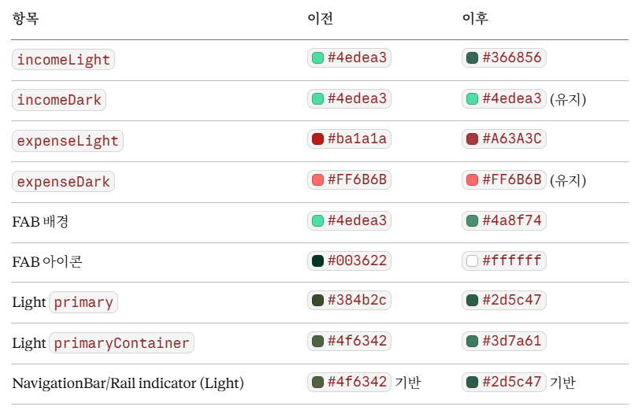
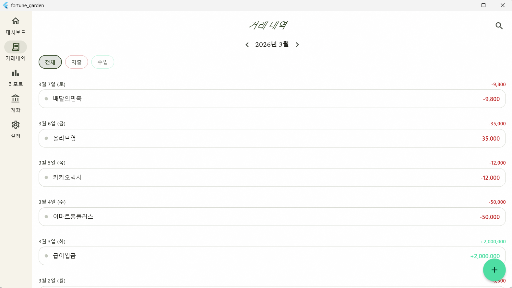
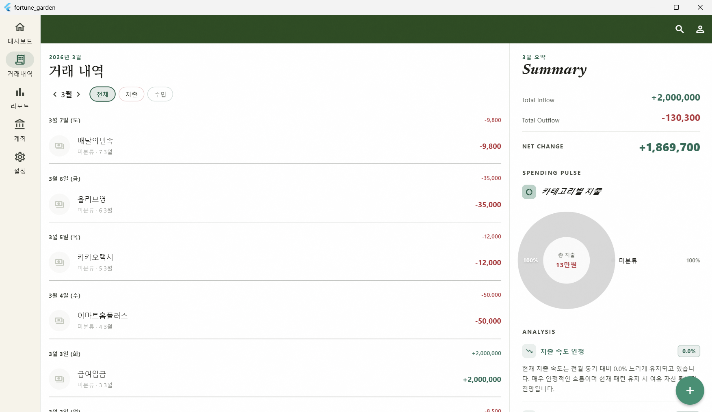
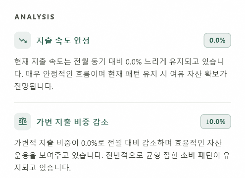

Overview
프로젝트 개요
앱 정보
Fortune Garden: 2인 가구용 크로스플랫폼 가계부 (Win/Android)
아키텍처
Clean Architecture (Presentation / Application / Data)
기술 스택
Riverpod, Drift(SQLite), GoRouter, FL Chart, Newsreader Serif
DB 스키마
9개 테이블 (Version 2): profiles, accounts, transactions, categories 등
Part A — Design System
Fortune Garden Hybrid (v1.1)
A1. 컬러 토큰 업데이트

A2. 컴포넌트 및 타이포그래피 규칙
- Typography: 헤드라인은 Newsreader Italic, 본문은 System Sans-serif 사용
-
GrainOverlay: 앱 전역 Scaffold에
grain.png(Opacity 0.04) 오버레이 적용 - Card: Border radius 16px, OutlineVariant 테두리 적용, Elevation 0 고정
- Desktop: Viewport 너비 720px 기준으로 레이아웃 분기 처리
Part B — Transaction Screen
거래 내역 화면 (SCR-003) 전면 재작성

하드코딩된 색상을 제거하고, 복합 필터링 및 데스크탑 최적화 패널을 도입했습니다.

B1. 주요 기능 및 레이아웃
- 복합 필터: 월 이동 바(Provider), 수입/지출 칩 필터, 실시간 검색 기능 탑재
- 날짜 그룹핑: 일별 헤더에 요일 및 당일 수입/지출 합계 표시
- 인터랙션: 스와이프를 통한 거래 삭제 및 컨텍스트 기반 라우팅(push)
- 데스크탑 레이아웃: 좌측 목록 컬럼과 우측 요약 패널(400px)로 이원화
// 날짜 그룹핑 및 구분선 규칙 if (isFirst) hideDivider(); if (nextIsHeader) useHeavyDivider(); // outline opacity 0.5
Part C — Data Analysis
월간 분석 카드 (AnalysisCard)

AI API 없이 순수 Dart 산술 연산을 통해 전문 자산 관리 보고서 느낌의 통찰을 제공합니다.
C1. 분석 로직 설계
| 분석 항목 | 계산 공식 / 로직 |
|---|---|
| 지출 속도 | (현재 지출 / 전월 동기 누적 지출 - 1) × 100 |
| 일일 페이스 | 총 지출 / 이번 달 경과 일수 (권장 지출 가이드 생성) |
| 가변 비중 | 변동비(식비, 의류 등 ID: 1,3,5,6) / 전체 지출 비중 분석 |
| 집중 요일 | 전체 거래 중 가장 빈도가 높은 요일 및 카테고리 추출 |
문어체 알림 예시:
"현재 지출 속도는 전월 동기 대비 15% 빠르게 진행 중입니다. 예산 준수를 위해 향후 일일 평균 45,000원 이내로 소비 조정을 권장합니다."
"현재 지출 속도는 전월 동기 대비 15% 빠르게 진행 중입니다. 예산 준수를 위해 향후 일일 평균 45,000원 이내로 소비 조정을 권장합니다."
Part D — Session Worklog
세션 작업 내역 요약
| 작업 구분 | 대상 파일 | 변경 내용 |
|---|---|---|
| 테마 고도화 | app_theme.dart |
Hybrid 테마 색상 전면 업데이트 및 상수화 |
| 코드 정규화 | dashboard_screen.dart |
하드코딩된 ARGB 색상을 AppTheme 상수로 교체 |
| 기능 구현 | transactions_screen.dart |
SCR-003 리뉴얼 및 데스크탑/모바일 레이아웃 분기 |
| 신규 모듈 | monthly_analysis.dart |
데이터 기반 분석 로직 및 AnalysisCard UI 구현 |
Part E — Next Steps
향후 과제 (Backlog)
- SCR-004/005: 거래 상세 및 수동 입력 화면 디자인 시스템 적용
- SCR-006: 리포트 화면의 통계 시각화 및 분석 로직 확장
-
기능 확장:
app_settings연동을 통한 사용자 지정 목표 예산 반영 - 카테고리: DB 스키마 확장을 통한 변동비(Flexible) 카테고리 동적 설정
Comments